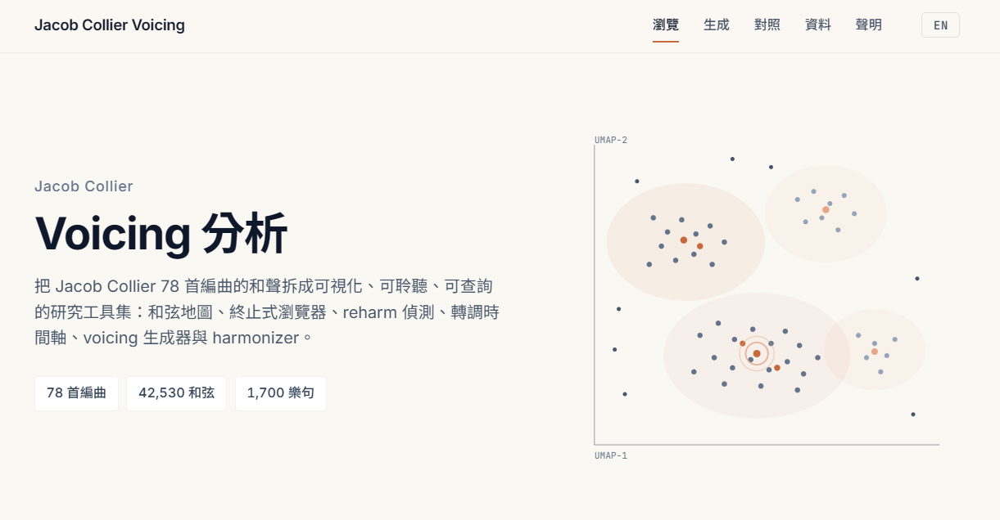

Research Tool
Jacob Collier 和聲聲位分析
把和聲拆成可以探索的資料
Open
啟動工具

▶ 開啟分析工具 ↗Overview
這是什麼
78
分析編曲
42,530
和弦
1,700
樂句
10
互動工具
Jacob Collier 的和聲常被形容為「聽得到卻講不清」。這個專案試著把它變成看得見、摸得到的東西——蒐集 78 首編曲、共 42,530 個和弦、1,700 個樂句，抽取每個和弦的特徵，再做成 10 個可互動探索的工具，讓人能實際翻看他在聲位（voicing）上的選擇。
Tools
十個工具
瀏覽 · Browse
六個瀏覽工具：和弦地圖（依聲位類型分佈視覺化每個和弦）、和弦轉換 A→B（相鄰和弦的移動）、樂句進行（多和弦序列與相似搜尋）、終止式瀏覽器（761 種終止式，附五線譜與鍵盤動畫）、再和聲瀏覽器（偵測三全音代理、借用和弦、調式互換等手法），以及轉調時間軸（每首歌的調性中心以色帶呈現）。
生成 · Generate
三個生成工具：聲位生成器（輸入旋律，找出最接近的 Jacob 式聲位並做聲部進行最佳化）、聲位拼貼器（用真實樂句片段、以 DTW 骨架規劃拼接）、配和聲器（即時單音輸入，以 YIN 偵測音高、Viterbi 推斷和弦、phase vocoder 變調）。
比較 · Compare
把 Jacob 的和弦分佈，疊在巴赫聖詠、爵士標準曲，以及 Bill Evans、Keith Jarrett 等鋼琴家的分佈之上比較，看出他的聲位選擇落在哪個位置。
Method
資料怎麼來的
從樂譜光學辨識（OMR）開始，把譜面轉成結構化資料，再抽取特徵、降維、分群，最後接上音訊與互動介面。
| 樂譜辨識 | Audiveris OMR → MusicXML |
| 特徵抽取 | music21，每個和弦約 26 項特徵 |
| 降維 / 分群 | UMAP · HDBSCAN |
| 即時音訊 | YIN 音高偵測 · Viterbi 和弦推斷 · phase vocoder 變調 |
| 規劃演算法 | Beam search · DTW · 分段動態規劃 |
| 呈現 | 和弦 / 轉換 / 終止式可發聲，並連結對應影片片段 |
Note
說明
本專案為非商業性質的個人研究工具，與 Jacob Collier 本人及其團隊無任何關聯。資料來自樂譜光學辨識，可能含有辨識誤差；影片對齊亦有約 ±2–5 秒的誤差範圍。